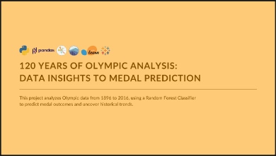
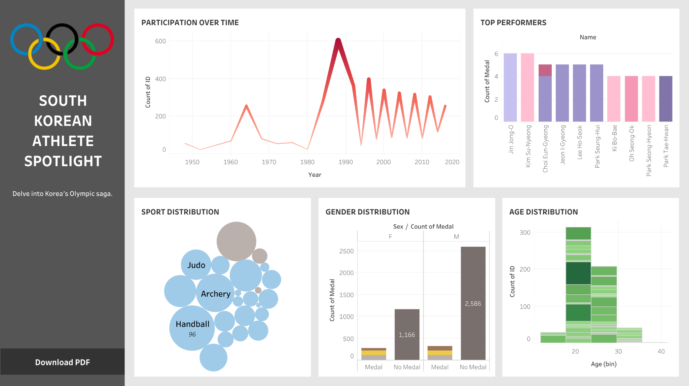

120 Years of Olympic Analysis: Data Insights to Medal Prediction



Title
120 Years of Olympic Analysis: Data Insights to Medal Predictions
Description
This project delves into a historical dataset encompassing the modern Olympic Games, spanning from Athens 1896 to Rio 2016. The overarching goal was to unearth patterns, trends, and insights, thereby enriching the understanding of the Olympics.
After an extensive exploratory data analysis, which shed light on medal distributions, athlete attributes, and evolving dynamics of medal achievements, data preprocessing ensued. The project culminated in predicting medal outcomes using a Random Forest Classifier, trained on data from 2000 onwards.
Skills
- Data cleaning
-
Exploratory Data Analysis (EDA)
- Country Insights: Analyzing medal distributions across nations
- Seasonal Analysis: Understanding the difference between summer and winter games
- Relationship Analysis: Uncovering correlations and patterns among features
- South Korean Athlete Spotlight: A focused analysis on South Korean athletes
- Data visualization: bar plots, line plots, pie plots, histograms, scatter plots, violin plots
- Feature engineering
- Data pre-processing
- Model selection and training using Random Forest
- Model evaluation based on accuracy
- Dashboard for South Korean Athlete Spotlight
Tools
Dataset
120 Years of Olympic History: Athletes and Results — Kaggle DatasetNotebook
Jupyter Notebook project covering Olympic exploratory analysis, visualization, feature engineering, and medal prediction.
github.com/minjonyfilm/120-years-of-olympic-analysis-data-insights-to-medal-predictionsDashboard

Tableau dashboard preview. Click the image to view it full size.
Open the interactive version on Tableau Public.
Open on Tableau PublicResults
- Identified evolving dynamics of medal achievements across nations over the years.
- Uncovered interesting insights related to athlete attributes such as age, height, and weight.
- Recognized the significance of variables like the athlete's representing country, type of sport, and season of games on medal predictions.
- Trained a model tailored for recent Olympic events, showcasing its potential in predicting medal outcomes with commendable accuracy.